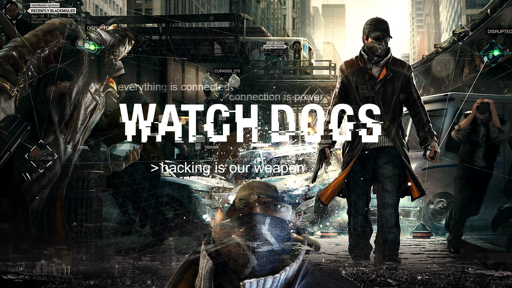

Все началось в Чикаго, где центральная компьютерная сеть соединила все и вся. Watch_Dogs - отражение внедрения технологий в наше общество. Используя город, как свое оружие, вы приступите к выполнению главной цели - созданию правосудия с собственным лицом.Всеобъемлющая сеть Чикаго называется Центральная Операционная Система (ctOS) и контролирует практически всю технологическую базу и информацию города - включая важнейшие данные о его жителях. Вы играете за Эйдена Пирса, гениального хакера и настоящего преступника, чье криминальное прошлое привело к жестокой семейной трагедии. В поисках справедливости вы сможете контролировать и взламывать все, что вас окружает, с легкостью манипулируя ctOS. Вы получите доступ к камерам, следящим за всеми, загрузите персональные данные, чтобы добиться своей цели, будете контролировать светофоры и общественный транспорт, чтобы остановить противника... и это далеко не все.

Эйден Пирс
Вы - Эйден Пирс, человек с печатью жестокости на лице, одержимый слежкой, постоянно втайне следящий за своей семьей, пытаясь уберечь их от событий прошлого. К несчастью, теперь его семья вновь находится в опасности. Доведенный до предела, он возьмет правосудие в свои руки и встанет на пути продажной системы, используя все доступное оружие. Эйден станет новым героем-мстителем - забудьте про героев 70-х в плащах, это реальный человек, который полностью осознает последствия своих действий.Клара Лилл
Клара притягательна. Она опасна. Она как паук со смертельным ядом, который живет прямо рядом с вами, а вы и не догадываетесь. Она может залезть в любую систему и раскрыть любой секрет, который вы прячете.
Джорди Чин
Если вы невероятно круто попали, вызывайте устранителя. Это и есть Джорди. Он уладит любое дело, если оплата будет достойной. Нужно, чтобы тело исчезло? Хотите найти затаившегося врага? Кто-то вас реально достал? Звоните Джорди.Ти-Бон Грэди
Ти-Бон вырос мастером на все руки и подпольным хакером еще до повального наступления Интернета. Он просто не может удержаться от взлома запретных областей. Конечно, это влечет за собой наказание. Но он готов к таким поворотам. Он все отдаст за это.
ctOS
ctOS - это глобальная система, связывающая всю городскую инфраструктуру и системы общественной безопасности в один централизованный узел. Приоритеты системы - управление трафиком, экоразвитие, телекоммуникации и контроль преступности по всему Чикаго. Жители почувствовали заметные улучшения, такие, как сокращение времени в поездках, снижение уровня преступности, контроль за чистотой города и множество других.